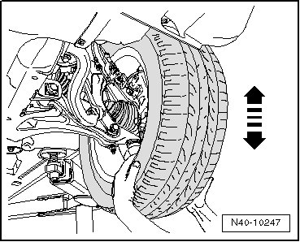
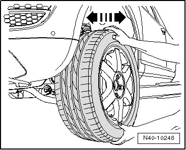

Ball Joint: Testing and Inspection
Ball Joint Checking
• The vehicle must be raised to perform the test.
Axial Play, Checking
- Pull the wheel down forcefully in the - direction of the arrow - and raise it up again.

Radial Clearance, Checking
- Straighten wheels/steering.
- Hold the top and bottom of the wheel and tilt it in the direction indicated by the - arrow -.

- Turn the wheels/steering to the left and repeat the test.
- Turn the wheels/steering to the right and repeat the test.
• There should not be any noticeable or visible play in either of the two checks.
• Make allowance for any wheel bearing play or play in strut mounting at top.
• Do not use any other testing methods because the ball joint could be damaged.